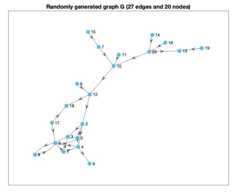

PRJ
Documentation of the Matlab code of the project.
Contents
Extract influential nodes
This function reads a txt file and stores the influential nodes in i_nodes.
function i_nodes = extract_nodes(file_path) fid = fopen(file_path); % opens the file. tline = fgetl(fid); i_nodes = cell(1); % cell array storing the nodes. i = 1; while ischar(tline) tline = tline(~isspace(tline)); % gets rid of whitespace. i_nodes{1,i} = tline; tline = fgetl(fid); i = i+1; end end
Adjacency list.
This function builds the adjacency list of a graph by reading the txt file.
function [s,t] = adjacency(file_path) fid = fopen(file_path); tline = fgetl(fid); i = 1; s = cell(1,10); t = cell(1,10); while ischar(tline) nodes = split(tline); if(~strcmp(nodes(1),nodes(2))) % checks if the vertices are the same to avoid self loops. s(i) = nodes(1); t(i) = nodes(2); end tline = fgetl(fid); i = i+1; end % gets rid of empty cell entries in both |s| and |t|. s = s(~cellfun(@isempty, s)); t = t(~cellfun(@isempty, t)); end

Neighbourhood of a node.
This function derives the neighbourhood of a node. This corresponds to all the nodes nodes connected to node by either an outgoing or incoming edge.
function [neighbours] = neighbourhood(graph,node) incoming_neighbours = predecessors(graph,node); outgoing_neighbours = successors(graph,node); % Union of incoming and outgoing neighbours. neighbours = {incoming_neighbours,outgoing_neighbours}; % |cat| command puts merges both cell arrays into one. neighbours = cat(1,neighbours{:}); % Gets rid of duplicates. neighbours = unique(neighbours); end
Number of edges in a neighbourhood
This function computes the number of edges linking any two nodes in neighbours.
function [n] = number_of_edges_within_neighbourhood(graph,neighbours) n = 0; for index = 1:size(neighbours,1) neighbour = neighbours{index,1}; [~,outgoing_nodes] = outedges(graph,neighbour); % Derives the number of nodes that are both in |neighbours| and outgoing nodes of |neighbour|. n = n+size(intersect(neighbours,outgoing_nodes),1); end end
Local clustering coefficient
This function computes the local clustering coefficient of vertex. The local clustering coefficient identifies how connected is the neighbourhood of vertex.
function lcc = local_clustering_coefficient(graph,vertex) vertex_neighbours = neighbourhood(graph,vertex); number_of_neighbours = size(vertex_neighbours,1); if size(vertex_neighbours,1) > 1 lcc = number_of_edges_within_neighbourhood(graph,vertex_neighbours)./(number_of_neighbours * (number_of_neighbours -1)); else lcc =0; end end
Local clustering coefficient for all nodes.
Calculates local clustering coefficient values for all vertices.
function lccs = compute_lccs(g) nodes = g.Nodes; lccs = zeros(size(nodes,1),1); % initialises an array storing LCC values. for i = 1:size(nodes,1) % |nodes(i,:).Name| extracts the name as a string of the given node. lccs(i) = local_clustering_coefficient(g,nodes(i,:).Name); end end
Main function
Plots the graph in several figures.
function main() [s,t] = adjacency("test_graph.txt"); % Creates a directed graph from the adjacency list. g = digraph(s,t); % The first figure displays the graph with nodes highlighted in blue. plot(g,'EdgeColor','k','NodeColor','#4DBEEE','MarkerSize',7,'LineStyle','-','LineWidth',0.75); title('Randomly generated graph (27 edges and 20 nodes)') % The second figure displays the graph with nodes highlighted related to % relatively to their in-degree values. plot(g,'NodeCData',indegree(g),'EdgeColor','k','MarkerSize',7,'LineStyle','-','LineWidth',0.75); title('Same graph with nodes coloured by in degree') colorbar; % The third figure displays the graph with nodes highlighted related to % relatively to their out-degree values. plot(g,'NodeCData',outdegree(g),'EdgeColor','k','MarkerSize',7,'LineStyle','-','LineWidth',0.75); title('Same graph with nodes coloured by out degree') colorbar; % The fourth figure displays the graph with nodes highlighted related to % relatively to their LCC values. lccs = compute_lccs(g); plot(g,'NodeCData',lccs,'EdgeColor','k','MarkerSize',7,'LineStyle','-','LineWidth',0.75); title('Same graph with nodes coloured by local clustering coefficient') colorbar; % The fifth figure displays the graph with initial seed nodes highlighted % in red, influenced nodes (excluding initial seed nodes) in green abd % other nodes in blue. H = plot(g,'EdgeColor','k','MarkerSize',7,'LineStyle','-','LineWidth',0.75,'NodeColor','#4DBEEE'); title('Same graph with influential nodes and influenced nodes') in = extract_nodes("influential_nodes.txt"); is = extract_nodes('influenced_nodes.txt'); highlight(H,in,'NodeColor','r','MarkerSize',7); highlight(H,is,'NodeColor','g','MarkerSize',7); end